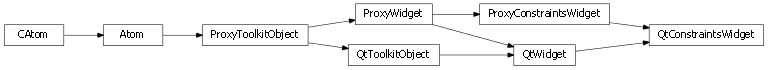
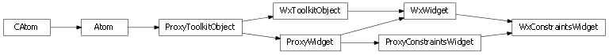

Bases: enaml.widgets.widget.Widget
A Widget subclass which adds constraint information.
A ConstraintsWidget is augmented with symbolic constraint variables which define a box model on the widget. This box model is used to declare constraints between this widget and other components which participate in constraints-based layout.
Constraints are added to a widget by assigning a list to the ‘constraints’ attribute. This list may contain raw LinearConstraint objects (which are created by manipulating the symbolic constraint variables) or DeferredConstraints objects which generated these LinearConstraint objects on-the-fly.
The list of user-specified constraints or constraint-generating objects for this component.
A constant symbolic object that represents the left boundary of the widget.
A constant symbolic object that represents the top boundary of the widget.
A constant symbolic object that represents the width of the widget.
A constant symbolic object that represents the height of the widget.
A constant symbolic object that represents the right boundary of the component. This is computed as left + width.
A constant symbolic object that represents the bottom boundary of the component. This is computed as top + height.
A constant symbolic object that represents the vertical center of the width. This is computed as top + 0.5 * height.
A constant symbolic object that represents the horizontal center of the widget. This is computed as left + 0.5 * width.
How strongly a component hugs it’s width hint. Valid strengths are ‘weak’, ‘medium’, ‘strong’, ‘required’ and ‘ignore’. Default is ‘strong’. This can be overridden on a per-control basis to specify a logical default for the given control.
How strongly a component hugs it’s height hint. Valid strengths are ‘weak’, ‘medium’, ‘strong’, ‘required’ and ‘ignore’. Default is ‘strong’. This can be overridden on a per-control basis to specify a logical default for the given control.
How strongly a component resists clipping its contents. Valid strengths are ‘weak’, ‘medium’, ‘strong’, ‘required’ and ‘ignore’. The default is ‘strong’ for width.
How strongly a component resists clipping its contents. Valid strengths are ‘weak’, ‘medium’, ‘strong’, ‘required’ and ‘ignore’. The default is ‘strong’ for height.
A reference to the ProxyConstraintsWidget object.
Request a relayout from the proxy widget.
This will invoke the ‘request_relayout’ method on an active proxy. The proxy should collapse the requests as necessary.
A method which returns self or None based on the truthness of the argument.
This can be useful to easily turn off the effects of an object in constraints-based layout.
| Parameters: | switch (bool) – A boolean which indicates whether this instance or None should be returned. |
|---|---|
| Returns: | result (self or None) – If ‘switch’ is boolean True, self is returned. Otherwise, None is returned. |
Get the constraints to use for this component’s layout.
This method may be overridden by subclasses as needed to create custom constraints. It will be called when the relayout request has been made by the layout engine. The default implementation will return the list of ‘constraints’ defined by the user.

Bases: enaml.qt.qt_widget.QtWidget, enaml.widgets.constraints_widget.ProxyConstraintsWidget
A Qt implementation of an Enaml ProxyConstraintsWidget.
The list of size hint constraints to apply to the widget. These constraints are computed once and then cached. If the size hint of a widget changes at run time, then size_hint_updated should be called to trigger an appropriate relayout of the widget.
A timer used to collapse relayout requests. The timer is created on an as needed basis and destroyed when it is no longer needed.
Request a relayout of the proxy widget.
This call will be placed on a collapsed timer. The first request will cause updates to be disabled on the widget. The updates will be reenabled after the actual relayout is performed.
Handle the timeout even from the layout trigger timer.
This handler will drop the reference to the timer, invoke the ‘relayout’ method, and reenable the updates on the widget.
Peform a relayout for this constraints widget.
The default behavior of this method is to proxy the call up the tree of ancestors until it is either handled by a subclass which has reimplemented this method (see QtContainer), or the ancestor is not an instance of QtConstraintsWidget, at which point the layout request is dropped.
Replace constraints in the current layout system.
The default behavior of this method is to proxy the call up the tree of ancestors until it is either handled by a subclass which has reimplemented this method (see QtContainer), or the ancestor is not an instance of QtConstraintsWidget, at which point the request is dropped.
| Parameters: |
|---|
Notify the layout system that the size hint has changed.
This method should be called when the size hint of the widget has changed and the layout should be refreshed to reflect the new state of the widget.
Create a layout function for the widget.
This method will create a function which will update the layout geometry of the underlying widget. The parameter and return values below describe the function that is returned by calling this method.
| Parameters: |
|
|---|---|
| Returns: | result ((x, y)) – The computed layout ‘x’ and ‘y’ amount, expressed in the coordinates of the layout owner widget. |

Bases: enaml.wx.wx_widget.WxWidget, enaml.widgets.constraints_widget.ProxyConstraintsWidget
A Wx implementation of an Enaml ProxyConstraintsWidget.
The list of size hint constraints to apply to the widget. These constraints are computed once and then cached. If the size hint of a widget changes at run time, then size_hint_updated should be called to trigger an appropriate relayout of the widget.
A timer used to collapse relayout requests. The timer is created on an as needed basis and destroyed when it is no longer needed.
Request a relayout of the proxy widget.
This call will be placed on a collapsed timer. The first request will cause updates to be disabled on the widget. The updates will be reenabled after the actual relayout is performed.
Handle the timeout even from the layout trigger timer.
This handler will drop the reference to the timer, invoke the ‘relayout’ method, and reenable the updates on the widget.
Peform a relayout for this constraints widget.
The default behavior of this method is to proxy the call up the tree of ancestors until it is either handled by a subclass which has reimplemented this method (see WxContainer), or the ancestor is not an instance of WxConstraintsWidget, at which point the layout request is dropped.
Replace constraints in the current layout system.
The default behavior of this method is to proxy the call up the tree of ancestors until it is either handled by a subclass which has reimplemented this method (see WxContainer), or the ancestor is not an instance of WxConstraintsWidget, at which point the request is dropped.
| Parameters: |
|---|
Notify the layout system that the size hint has changed.
This method should be called when the size hint of the widget has changed and the layout should be refreshed to reflect the new state of the widget.
Create a layout function for the widget.
This method will create a function which will update the layout geometry of the underlying widget. The parameter and return values below describe the function that is returned by calling this method.
| Parameters: |
|
|---|---|
| Returns: | result ((x, y)) – The computed layout ‘x’ and ‘y’ amount, expressed in the coordinates of the layout owner widget. |